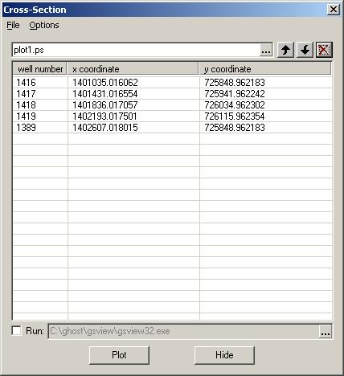
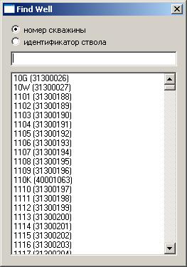
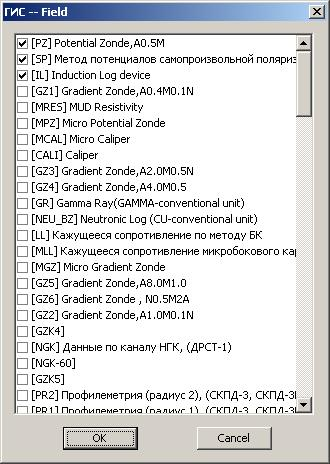
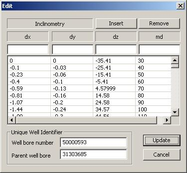

Построение вертикальных разрезов
Просмотр цифрового содержимого
Отображение данных в соответствии с трёхфазной диаграммой
Подсчёт запасов
Расчёт интегральных характеристик
Поиск скважин по имени или номеру ствола
Сопоставление разрезов скважин
Выдача отчёта по интерпретации ГИС
Трёхмерная визуализация фрагмента модели
Редактор инклинометрии скважины
Построение вертикальных разрезов
Диалог для построения разрезов вызывается путём выбора пункта Cross Section из меню View.
Пользователь задаёт конорольные точки на карте по двойному шелчку левой кнопки мыши.
Точка считается определённой в стволе скважины, если она попадает в круг радиуса 5м
от истинного положения скважины. При этом в окне диалога Cross Section высвечивается
имя соответствующей скважины. Ранее определённые точки можно перетащить мышью в новое
положение, при этом соответствующим образом будет обновлён рабочий диалог. Удерживая клавишу Ctrl
таким же образом можно продублировать какую-либо контрольную точку на новом месте.
В окне диалога имеются кнопки для изменения порядка расположения контрольных точек
и их удаления. Из меню File можно загрузить ранее сохранённый разрез или сохранить
текущий. Формат файла для разреза -- последовательность координат контрольных точек.
По нажатию кнопки Plot запускается процедура загрузки данных из базы и автоматически
генерируется код программы на языке Postscript для графического представления разреза
в векторном виде, пригодном для последующей обработки в графическом редакторе или перати
на принтере, с установленной поддержкой Postscript. Если установлен флаг Run (Запуск)
в нижней части окна диалога, автоматически сгенерированная программа загружается в
программу, которая предназначена для работы с файлами формата Postscript. Код на языке
Postscript разрабатывался в соответствии с рядом спецификациий, опубликованными
Adobe Systems Incorporated, что гарантирует совместимость с широким спектром программного
обеспечения для работы с файлани этого формата. Для просмотра полученного графического
изображения рекомендуется использовать программу GhostView, находящуюся в свободном
распространении. Для визуального редактирования можно применять пакет CorelDraw.

Рис.3-1.Задание контрольных точек для разреза модели.
Тип разреза зависит от того, активен ли режим CumulativeS. Если режим включён, то строится разрез, на котором показаны зоны коллектор/неколлектор а также характер насыщения коллектора флюидами. Если режим CumulativeS отключен, строится разрез текущего куба свойств. При этом, если доступна соответствующая информация вдоль ствола скважины, что позволяет инженеру оценить, насколько точно предлагаемая геологическая модель соответствует экпериментальным данным. Вот нескольно примеров изображений, полученных с помощью данного инструмента:
Рис 3-2. Комбинированная насыщенность на основе трёхфазной даграммы, разбивка на страницы
Рис 3-3.Распределение коэффициента самопроизвольной поляризации и проницаемость в районе скважины 5832, геометрия основного и бокового ствола скважины, арифметическое и логарифмическое отображение данных цветовом.

Рис 3-4.Стандартный каротаж, границы геологических формаций и распределение пористости по линии скважин 1916, 1917, 1918, 1919, 1920 и 2448.
Путём выбора пункта меню Options в окне диалога Cross Section можно задать такие характеристики печатаемой диаграммы как размеры полей, число страниц, характеристики сетки, формат бумаги и др. Опция show formation позволяет отобразить штриховкой границы геологических объектов на диаграмме. Для коррестного отображения такой диаграммы в окне GhostView следует убедиться, что параметр Graphics Alpha диалога Media | Display Settings установлен 1.

Рис.3-5.Параметры для построения изображения.
Просмотр цифрового содержимого
Выбор пункта меню Cell Probe открывает диалог для просмотра цифрового содержимого столбца
ячеек модели в виде электронной таблицы. В этом режиме двойнойной щелчёк над ячейкой в
рабочей области подгружает новые данные в таблицу. В таблице присутствуют данные из всех
массивов, которые представлены в базе данных. Для динамических массивов данные загружаются
на момент времени, который отображён на навигационной панели. Данный инструмент позволяет
оценить насколько хорошо согласуются между собой свойства в отдельных ячейках.
Рис.3-6.Цифровое содержимое модели.
Отображение данных в соответствии с трёхфазной диаграммой
Выбор пункта меню CumulativeS переводит программу в режим отображения насыщенности в
соответствии с трёхфазной диаграммой. Для того, чтобы была доступна эта опция, в базе данных
должн присутствовать массив с именем soil (для нефтенасыщенности) и (или) sgas (для
газонасыщенности). Таким образом, для каждой ячейки имеется три величины, связанные
соотношением
Для отбражения этого набора данных в цвете выбираются три опорных цвета (жёлтый для газа, коричневый для нефти и синий для воды) и значения насыщенностей используются как веса при трилинейной интерполяции между этими цветами. Квоме этого, на диаграмме будет отображён признак коллектор/неколлектор, который задаёт проницаемые области модели. Признак определяется по значению проницаемости, пороговое значение задаётся в регистрационной базе данных Windows как значение ключа HKEY_CURRENT_USER\Software\Field\Field\Nocollector.
Рис.3-7.Комбинированная насыщенность коллекторов модели.
Подсчёт запасов
Диалог для подсчёта запасов вызывается командой Resources из меню View. По умолчанию
подсчитываются запасы нефти и, если в модели присутствует газовая фаза, газа в целом
по модели. В окне диалога присутствуют поля редактирования для задания плотности нефти
в поверхностных условиях, пересчётного коэффициента, а также термического и барического
коэффициентов для газа. При нажатии кнопки Edit всплывает диалог для задания новых или
редактирования уже существующих объектов, по которым ведётся подсчёт запасов углеводородов.
Геологические обекты (пласты) могут быть определены поверхностями кровли и подошвы, которые
выступают как пределы интегрирования при подсчёте запасов. Существующие свойства отображаются
в списке с левой стороны, при щелчке на элементе этого списка, его характеристики загружаются
в поля редактирования с правой стороны. Обновляется список при нажатии кнопки Update.
Выделенный элемент списка кожно удалть при нажатии кнопки Remove. Когда всплывает окно диалога
Resources, программа переключается в режим отображения двумерных полей. В обзорном окне и
в рабочей области отображаются карты, соответствующие удельным запасам свойства, находящегося
в выделенной ячейке окна диалога. Переключение между различными свойствами происходит по
щелчку мыши над соответствующими ячейками. Программа возвращается в обычный режим работя
при нажатии кнопки Done.


Рис.3-7..3-8.Карты удельных запасов.
Расчёт интегральных характеристик
В ходе эксплуатации программы встала необходимость обращаться к другим интегральным характеристикам
месторождения, таким как, например, карты нефтенасыщенных толщин. Порядок работы с такими
характеристиками очень похож на работу с удельными запасами, но, к сожалению, не предусмотрен
в схеме для подсчёта запасов. Поэтому был разработан более универсальный инструмент, названный
Integral Properties. Используя этот инструмент, пользователь спосбен выполнить расчёт интеграла
с произвольной подынтегральной функцией и произвольными границами интегрируемой области
внутри модели. Окно диалога Integral Properties вызывается командой Integral Prop из меню
View. Как и окно диалога Resources, окно для интегральных свойств месторождения имеет слева
список свойств, а справа -- поля для редактирования характеристик, определяющие выделенное
в списке свойство. Эти характеристики разделяются на три группы: Integral dataset, Geological
formation и Areal constraint. Integral dataset задаёт название интегральной характеристики,
которое появится в списке свойств после нажатия кнопки Compute, арифметическое выражение
для подынтегральной функции и необязательный комментарий, описывающий набор данных.
Geological formation, подобно диалогу Resources, задаёт поверхности, ограничивающие
область интегрирования сверху и снизу. Areal constraint задаёт контур, внутри которого
производится интегрирование. Если Geological formation или Areal constraint не заданы,
интегрирование происходит по всему объёму. Для каждой из групп свойств ведётся
свой список, что позволяет сильно сократить время расчёта, если требуется определить
множество интегральных характеристик по одному и тому же объекту разработки. Напимер,
если требуется подсчитаь запасы нефти и газа, содержащиеся в пласте АС10, на территории ДНС13,
после расчёта по нефти пользователь задаёт новую информацию только для группы Integral dataset,
при этом расчёт индикаторной карты второй раз производиться не будет. Результаты расчётов можно
записать в файл с помощью команды Save из меню File. Во время следующего сеанса работы,
ранее посчитанные интегральные характеристики можно загрузить с помощью команды Open из
меню File. Контур, ограничивающий область интегрирования в плоскости XY, загружается из
файла в формате *.bln программы Surfer. Аналогично, поверхности, ограничивающие геологический
объект, задаются в формате *.grd программы Surfer, поддерживаются файлы с сигнатурами DSAA,
DSBB, DSRB. Нажатие кнопки Digitize предоставляет возможность визуального редактирования
контура с последующей записью в файл.
Рис.3-9..3-12.Расчёт интегральных свойств.
Поиск скважин по имени или номеру ствола
Этот диалог представляет собой средство для быстрого поиска по имени скважины или по
идентификатору ствола скважины.Он отображает в рабочей области все скважины, траектория
ствола которых имеет общие точки с построенной моделью. Диалог работает следующим образом.
Пользователь в поле редактирования вводит имя скважины, при этом список всех скважин
прокручивается до первого элемента, для которого выполнено совпадение. Как только
нужная скважина найдена, можно нажать клавишу ENTER или выполнить двойной щелчёк мыши над
элементом списка для переноса центра рабочей области в точку с координатами нужной
скважины

Рис.3-13.Панель диалога для поиска скважин в рабочей области.
Сопоставление разрезов скважин
Этот диалог предназначен для работы с обширным разделом базы данных, где собрана информация
по геофизическим исследоаниям скважин (каротажу). В текущей реализации поддерживается лишь вывод
стандартного каротажа (удельное сорротивление [PZ], кривая самопроизвольной поляризации [SP] и
индукционный каротаж [IL]) при построении ветрикального разреза месторождения.

Рис.3-14.Панель диалога для поиска скважин в рабочей области.
Выдача отчёта по интерпретации ГИС
Выдача отчёта по интерпретации ГИС производится при выборе пункта Geophysics (Геофизика)
в контекстно-зависимом меню, появляющимся при нажатии правой кнопки над скважиной в
рабочей области программы. При этом, используя технологию Automation, запускается
экземпляр приложения Microsoft Excel, и в него передаются данные, хранящиеся в
разделе geophysics файла HDF в сжатом виде.
Рис.3-15.Отчёт по интерпретации ГИС.
Трёхмерная визуализация фрагмента модели
Этот инструмент вызывается при выборе пункта 3D Fragment из контекстно-зависимого меню в
рабочей области. На данный моммент по желанию пользователей реализована загрузка траектории
ствола скважины и её окружения в окно для просмотра в трёхмерном виде. Полученное изображение
сохраняется в растровый файл по команде Save меню File.

Рис.3-16.Трёхмерный фрагмент модели.
Редактор инклинометрии скважины
Редактор инклинометрии вызывается по команде Inclinometry из контекстно-зависимого меню в
рабочей области. Он предназначен для записи в базу данных траектории новых скважин или
исправления уже существующих. Так как на каждую скважину могут приходиться сотни записей,
задающих её траекторию, изменение всей траектории требует больших трудозатрат, поэтому
при запуске редактора в него загружается траектория какой-то конкретной скважины в качестве
шаблона с тем, чтобы пользователь изменил всего лишь несколько точек на её траектории и внёс
исправленную информацию в базу данных. Для каждой скважины в базе данных различается по
своему идентификатору, который задаётся в поле редактирования Well bore number. Если
пользователь желает задать траекторию бокового ствола на основе траектории основного,
требуется указать идентификатор основного ствола в поле редактирования Parent well bore.
Траектория ствола скважины представлена в виде таблицы с полями dx, dy, dz и md. Тройка
(dx, dy, dz) задаёт отклонение в метрах от устья скважины замера, проведённого на расстоянии
md вдоль ствола скважины. изменения в таблицу вносятся при нажатии кнопки Insert. Аналогично,
чтобы удалить один или несколько элементов таблицы, следует выделить нужные элементы и
нажать кнопку Remove. Наконец, по окончании редактирования траектории скважины, нужно
внести изменения в базу данных, нажав кнопку Update. Отказаться от изменения данных и закрыть
диалоговую панель можно с помощью кнопки Cancel.

Рис.3-17.Редактор инклинометрии.
Created by Alexander Chupeev